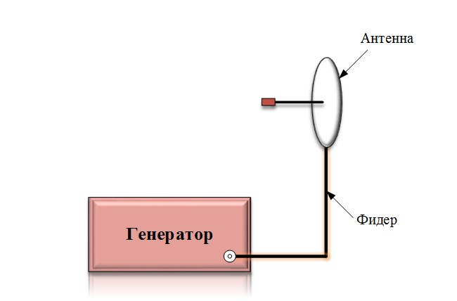
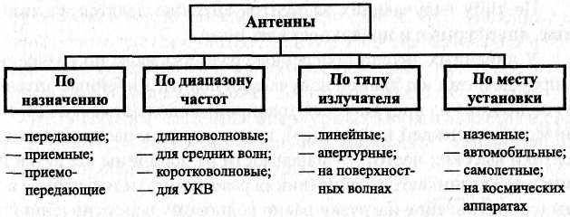
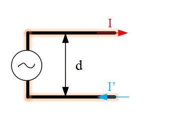
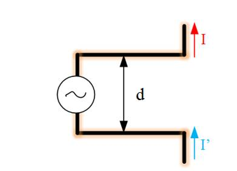
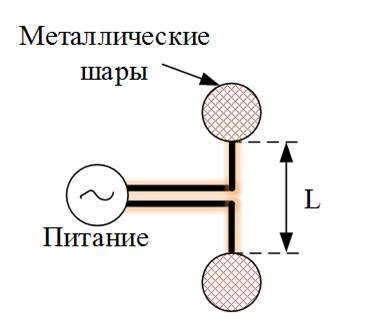

Основы теории антенн. Классификация антенн. Направленные свойства антенн.
Вся беспроводная
передача данных основана на процессе распространения электромагнитного поля от
источника в окружающее пространство. Антенна играет роль этого источника поля.
Сам процесс излучения начинается с того, что под действием высокочастотных
электромагнитных полей в излучающей системе (антенне) появляются сторонние токи
и заряды. Токи и заряды в свою очередь подводятся от генератора по фидерному
тракту (или фидера от слова "to feed" - питать).
Таким образом, в систему
излучения электромагнитного поля входят: генератор колебаний, фидер и
излучатель. Конечно, сам фидер и генератор непосредственно в излучении не
участвуют.
Элементы
системы излучения электромагнитного поля

Любая антенна обладает
так называемым принципом "двойственности", который говорит о том, что любая
антенна может быть как передающей (то есть преобразовывать волны линии передачи
в расходящиеся волны окружающего пространства), так и приемной (осуществлять
обратное преобразование).
Вне зависимости от реализации и вида антенны, она
характеризуется следующими основными параметрами:
Диаграмма направленности
(ДН). Это распределение напряженности (или энергии) поля в пространстве,
показывает в каких направлениях и с какой мощностью излучает антенная система.
Строится эта зависимость, как правило, в сферической системе координат.
В зависимости от вида диаграммы (от того, насколько диаграмма "острая") различают изотропные антенны, слабонаправленные, высоконаправленные. От вида диаграммы направленности зависят такие важные характеристики антенны как коэффициент направленного действия (КНД) и коэффициент усилении (КУ). Коэффициент полезного действия антенны. Он должен быть достаточно высоким, а потери – малыми, именно по этой причине при реализации антенн используют металлические конструкции, обладающие высокой проводимостью и диэлектрики с малыми потерями.
Согласование линии
передачи с нагрузкой. Так как и передающая и приемная антенны соединяются с
линией питания, то ее входное сопротивление должно быть согласовано с
волновым сопротивлением линии. Иначе будет возникать нежелательное возникновение
отраженных волн, а наличие последних – это всегда уменьшение излучаемой мощности
и источник дополнительных помех.
Вес и габариты. Ясно, что при реализации
любого устройства нужно стремиться к получению его наименьших массогабаритных
размеров, однако, отметим, что размеры антенны однозначно связаны с основной
длиной волны, на которой работает антенна. Вообще в антенной технике не
существует понятия "большая" и "маленькая" антенна.
Размеры антенны принято
характеризовать в длинах волн. Если а – это диаметр зеркала (например,
зеркальной антенны), то ее размер можно записать так: это значит, что в
диаметр зеркала укладывается 8 длин волн. Если такое зеркало работает в
диапазоне 2.4 ГГц (длина волны 12,5 см), то его диаметр будет составлять 1 метр,
а если это диапазон 900 МГц (длина волны 33 см) – то диаметр уже больше 2.5
метров.
Классификация антенн

Особенности
функционирования передающих антенн
Рассмотрим принцип действия простейшего излучающего устройства. Если взять простую двухпроводную симметричную линию, то излучать в пространство она не будет, несмотря на то, что в ней текут токи высокой частоты

Излучение будет
отсутствовать за счет того, что токи I и I’ находятся в противофазе, что
приводит их к взаимной компенсации. Для получения излучения можно развести концы
двухпроводной линии, чтобы поля от токов I, I’ не могла компенсировать друг
друга

Такая антенна получила
название симметричного вибратора. Распределение тока в вибраторе остается таким
же, каким оно было на соответствующем участке двухпроводной линии. Для
исследования поля, излученного антеннами из проводов, удобно представлять такую
антенну в виде совокупности элементарных электрических вибраторов (ЭЭВ) малой
длины (малой по сравнению с длиной волны). В пределах каждого такого
элементарного вибратора амплитуду и фазу тока можно считать неизменными. В
конечном итоге общее поле, излученное антенной, можно рассчитать как сумму
полей, излученных отдельными элементарными вибраторами (в теории это называется
принцип суперпозиции)
На практике ЭЭВ
реализуется в виде диполя Герца. Это антенна является первым реализованным
излучателем электромагнитных колебаний

Такой излучатель можно
сделать, если на концах тонких проводов (длиной L, меньшей длины волны)
установить проводящие тела с большой емкостью (например, металлические шары).
Заряженные шары создают токи, которые значительно выше емкостных токов между
проводами. Так обеспечивается равномерное распределение тока вдоль проводника.
Отметим, что на практике диполь Герца практически не используется